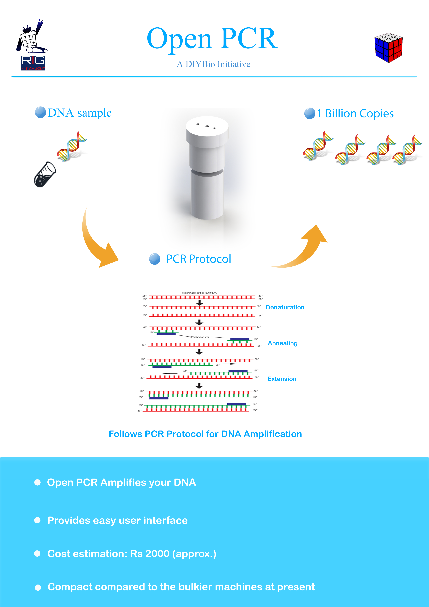
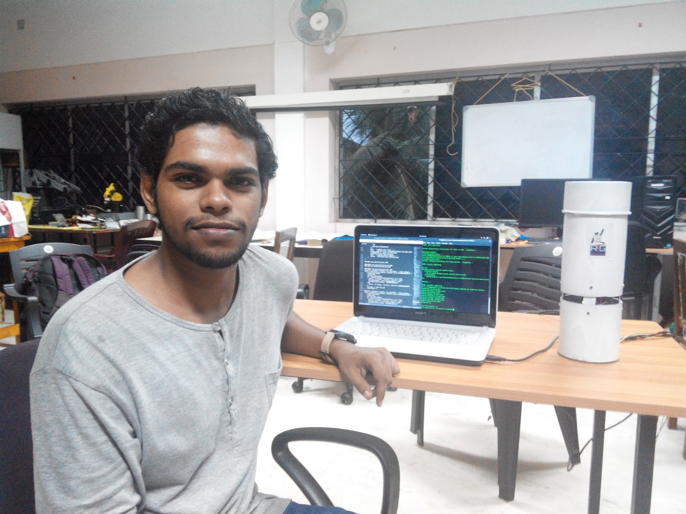
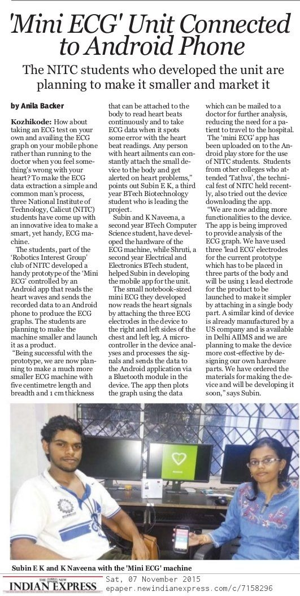
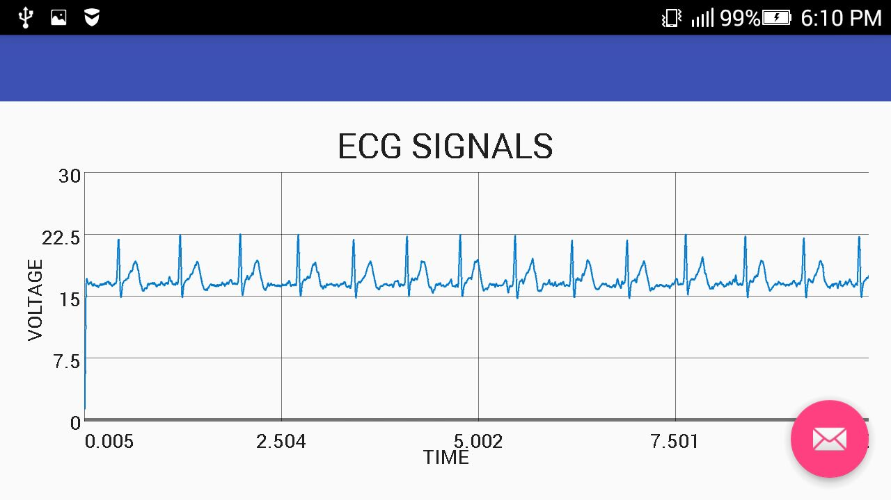

Currently, I'm pursuing Ph.D. in Biomedical Engineering at University Of Iowa. Prior to that i worked as a Systems Engineer in Robotics and Cognitive Systems group ( TCS ). I did my B.Tech in Biotechnology from National Institute of Technology Calicut. I'm from a small village in Northern Kerala in India. Since my childhood, I have been interested in exploring new technology domains. Designing and experimenting these new domains have become a part of my life. I have worked in various fields like Deep learning, Machine learning, Robotics, Android App Development, Augmented Reality and Microbiology. It is the projects that I have done which has taken me through the different aspects of these fields.
Biomedical Engineering
GPA: 8.14/10
Percentage : 97%
C++, Java ,Python
Android studio, Solid Works, Matlab, Cytoscape, Git, LATEX
Arduino, MSP430, Raspberry Pi, ECG Front end module, Bluetooth Low energy module
My greatest passions are Technology and travel. I used to read a whole lot of books but that doesn't mean I stopped reading. It just means that now its all on the internet. My experience has taught me that science has to experiment, not just learned. yeah...I have tried a whole lot of cool stuff which ranges from designing rockets to cultivating bacterias at home. Being a member of Astronomy club at Regional Science Centre My greatest passions are Technology and travel. I used to read a whole lot of books but that doesn't mean I stopped reading. It just means that now its all on the internet. My experience has taught me that science has to experiment, not just learned. yeah...I have tried a whole lot of cool stuff which ranges from designing rockets to cultivating bacterias at home. Being a member of the Astronomy club at Regional Science Centre made me realize the fact that nothing is impossible. We discuss almost everything that fascinates us about Science. Happy that I have friends who help me in all kinds of crazy experiments. made me realize the fact that nothing is impossible. We discuss almost everything that fascinates us about Science. Happy that I have friends who help me in all kinds of crazy experiments.
It was then that I joined robotics club at NIT Calicut where the boom of programming languages and electronics hit me. I was able to learn Arduino and the most awe-inspiring thing called Android Studio. I have developed almost everything that had come to my mind and I'm pretty sure that this will keep me going :)
The DNA Amplifier available in the market always cost more than 1600$, Which makes the experiments with PCR a bit more costly and not available for science guys. Since PCR is the basic step in genetic engineering it is too hard to continue any experiments in biotechnology I have designed a PCR machine under 300$, which can be completely controlled by an android application. This machine runs the basic PCR protocol and replicates the DNA and gives you the same result as the normal PCR machine can give. The whole machine can also be debugged using the android application. The first model of this machine have released into DIY Bio community
Technology : The upper body of the robot which is interacting with humans is designed using Unity and integrated into a mobile robot-like firebird. The mobile robot base will give essential mobility for Halflife and the other half will be generated by an Android application when it finds a marker over it.
 Halflife is a social robot that exists in both real life and augmented reality. Social robots are becoming an integral system in our life and Robotics research. But such robots cost a lot of money because of the complex systems that exist in them. Here we are trying to create a social robot which has its upper body in augmented reality and another half in real life.
Technology : The upper body of the robot which is interacting with humans is designed using Unity and integrated into a mobile robot-like Firebird. The mobile robot base will give essential mobility for Halflife and the other half will be generated by an Android application when it finds a marker over it.
The machine is Designed to be small and to be operated by an average user.It simplifies the Process of ECG data extraction.The patient can use the machine by himself and can send the data to a doctor for analysis The machine works on a Front end ECG ic. It extracts the ECG Signals from your body,the data is analysed by a micro controller and send through the bluetooth.The android application takes the data and plots the ECG Graph Mini ECG android application can be used to plot the ECG graphs of any bluetooth based ecg machines
 Secura is a Double password protected door lock operated by an Android application based on augmented reality. There is no lock and key mechanism in this system, The application identifies the door based on the QR code generated by the user and the keypad becomes visible only when it identifies the QR code. Later the user is prompted to enter the four-digit password on the screen to open the door. This unit allows the user to change both the lock (QR code ) and the password at any time and allows the exchange of locks between doors
Technology : The first password mentioned here is the QR code generated by the user. It can be fixed onto any door powered by secura. The android application will generate the keypad only when it finds the marker ( QR Code ) and it matches the password with the data given by the user. And instructions will be given through Bluetooth to open the door
Abhram is an android based data transfer software which will let you transfer data through your finger. The application was inspired by "SPARSH" which was released by MIT Media Lab. Abhram can transfer images from one android device to other just by your touch. It works based on the Dropbox cloud. The data is temporarily stored in Dropbox and retrieved on the point of next touch on any android based devices. The user has two modes either to transfer data or to receive it. It requires a Dropbox account
AR Magic box is an augmented reality-based setup which allows a person to control any physical devices using Augmented reality powered android application. In the video, a Device( Fan ) is been controlled by attaching a marker over it and connecting its power source to AR Magic box. The device allows us to control any devices connected to it without creating any physical changes in it
Normal greeting cards are not meant to hide secrets from everyone. Whoever has the card can read whatever written in it. Here we found the possibility of augmented reality to hide secrets in a greeting card, the person who gets the card have to use our specialized android application to read the secret written in the card. This greeting card is been given during farewell of my seniors in Robotics interest group.
Technology : The Greeting cards contain a marker(The cartoon of a dancing girl) near to the greetings message. This is considered as an image marker and tracked in the video stream of the android application. When the application detects the marker it overlays an image of our secret message.
Augmented reality newspaper is an example of how a future newspaper looks like. When the normal newspaper can only give an image of a specific news. The augmented newspaper will be able to play a video that is related to the image in the newspaper. AR newspaper requires our specialized android application which can track and detect the image given in a newspaper and load a video on its position. The given youtube video is about a newsletter I designed on the activities of the robotics club when the user shows his camera over the news the club orientation video will start to play in the position of the image in the newsletter